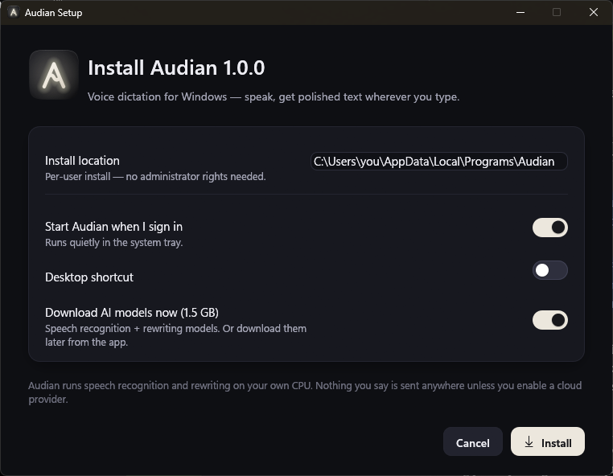
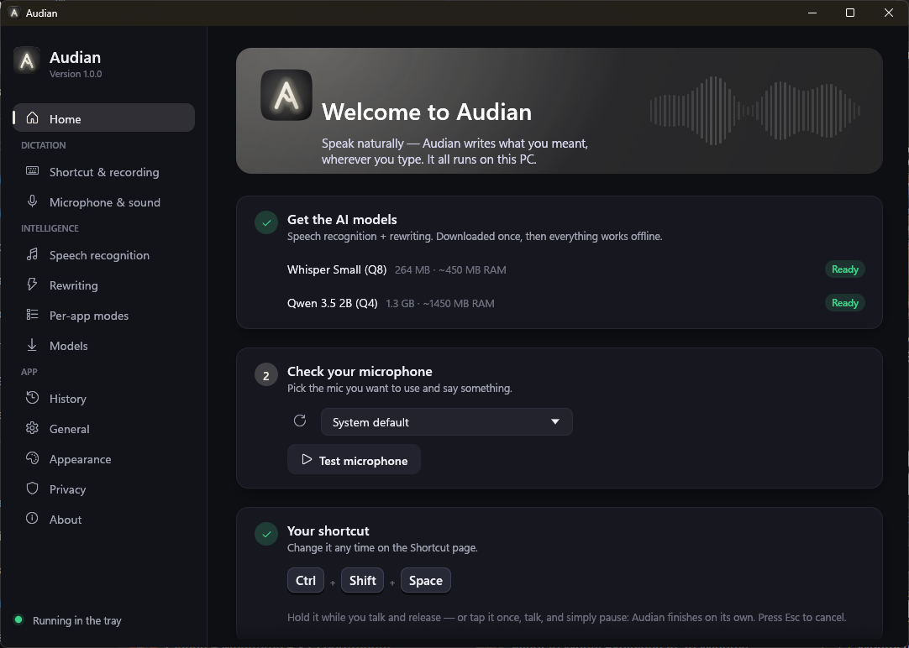
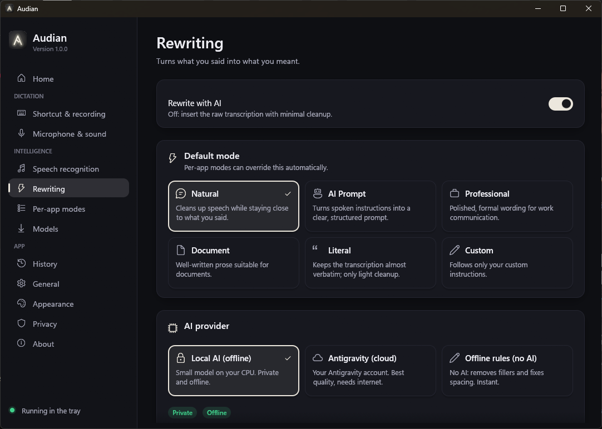
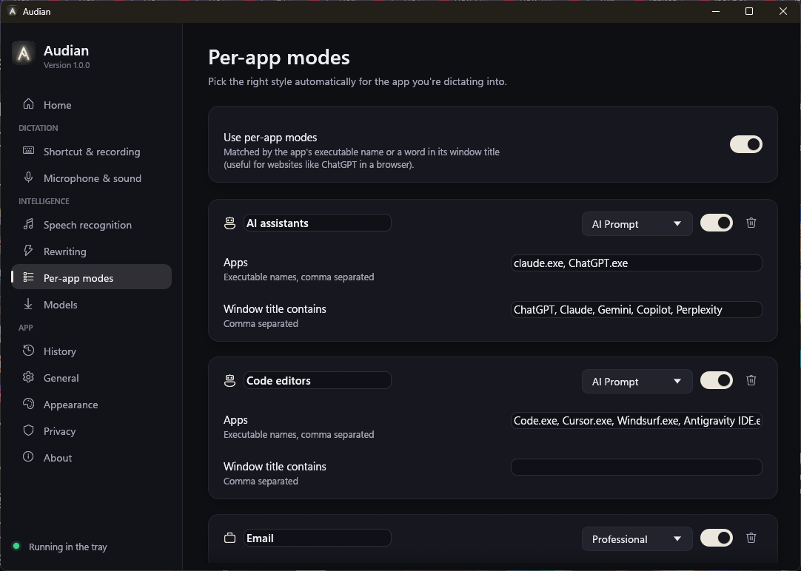
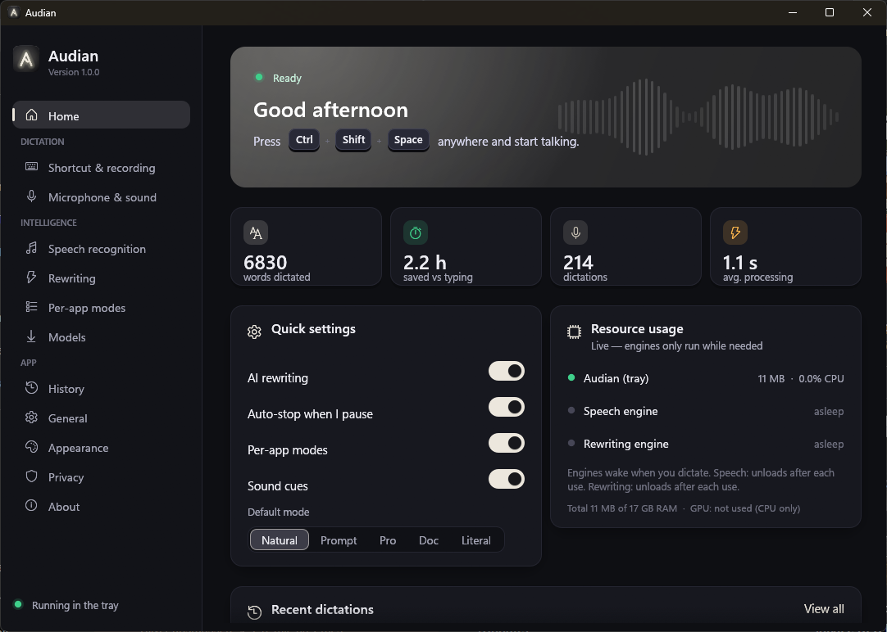
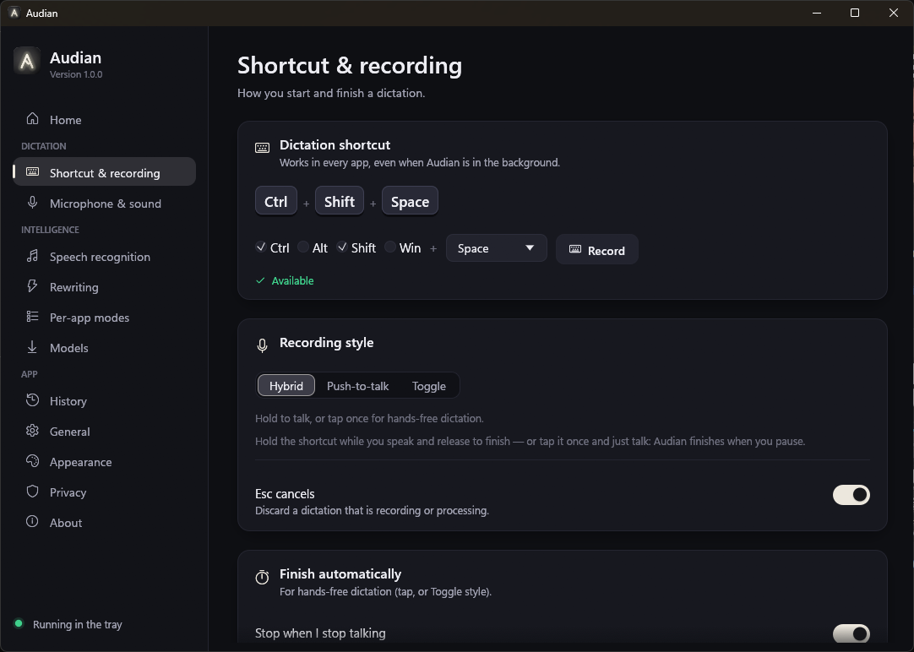
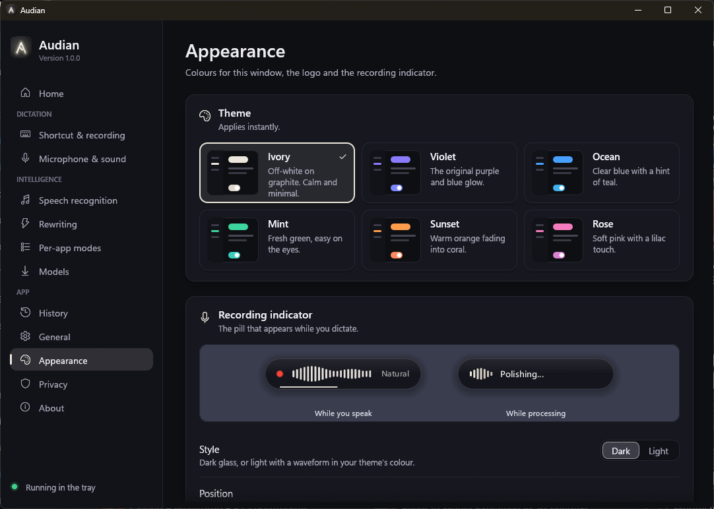
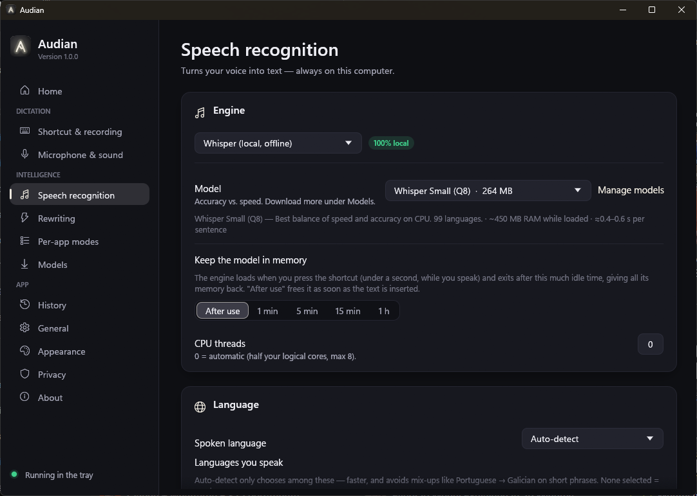
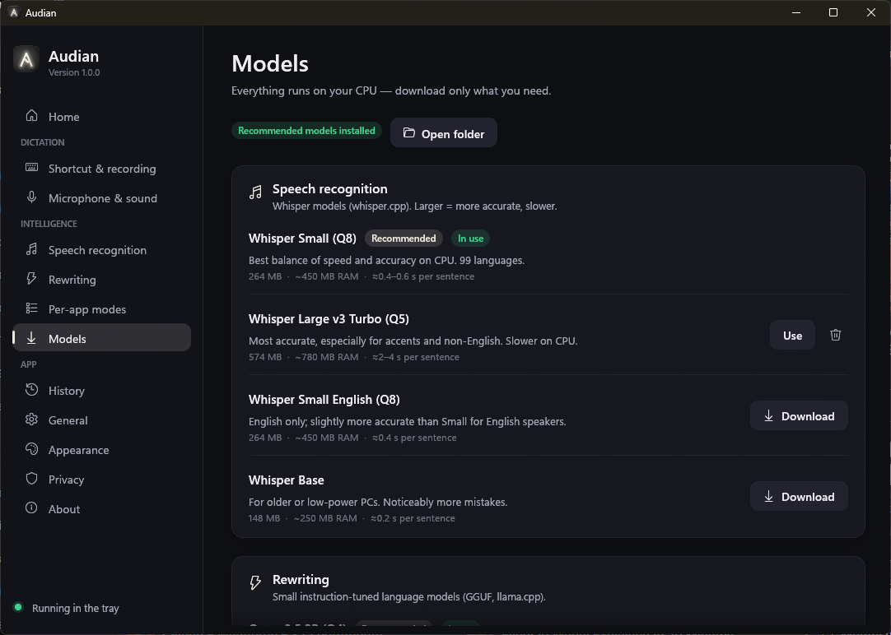
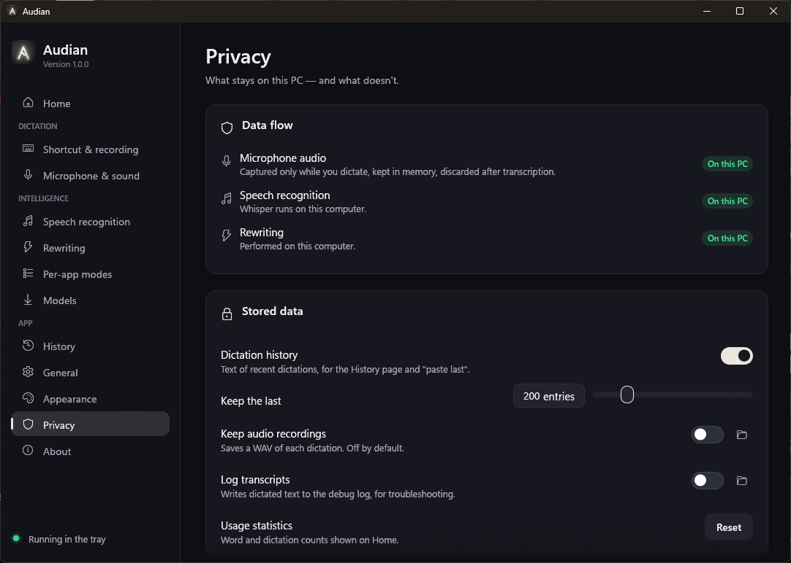

Audian is a small background utility. You press a keyboard shortcut in any app, speak the way you talk, and Audian inserts a clean, well-formed version of what you meant — not a literal transcript — at your text cursor.
Saying "um so basically I, I want to make this thing work better and like organize the code because it's kinda messy" produces "I want to make this work better and organize the code, because it's kind of messy." in Natural mode, or "Improve the implementation and organize the code to make it cleaner and more maintainable." in AI Prompt mode.
Run Audian-Setup-1.0.0-x64.exe. It installs for your Windows account only, so no administrator
rights are needed (the same model as VS Code's user installer). Requirements: Windows 10 or 11, 64-bit x86 CPU with
AVX2 (any Intel/AMD CPU from roughly 2015 on), 8 GB RAM recommended (4 GB works with the lighter models).

| Step | Details |
|---|---|
| Files | %LOCALAPPDATA%\Programs\Audian: audian.exe (tray app + window), audian-stt.exe (speech engine), audian-llm.exe (rewriting engine), uninstall.exe. About 29 MB. |
| Shortcuts | Start Menu entry “Audian”; optional desktop shortcut. |
| Registration | Listed in Settings › Apps › Installed apps with a working Uninstall button. |
| Startup | Optional entry in your user's Run key (Audian starts in the tray when you sign in). |
| Models | Optional download of Whisper Small (264 MB) and Qwen 3.5 2B (1.28 GB) into %LOCALAPPDATA%\Audian\models, verified by SHA-256. Resumable. |
| Updates | Running a newer installer stops Audian, replaces the files and keeps your settings, history and models. |
Audian-Setup.exe --quiet [--with-models] [--no-autostart] [--desktop-shortcut] [--no-launch] uninstall.exe --uninstall [--quiet] [--purge] # --purge also deletes settings, history, models
On first launch Audian opens a short welcome: (1) download the models if they're missing, (2) pick and test your microphone, (3) learn the shortcut. After that it lives in the system tray.

Click into any text field, then use your shortcut (default Ctrl+Shift+Space; yours is set to Ctrl+Shift+V).
| Style | How it works | Best for |
|---|---|---|
| Hybrid (default) | Hold the shortcut while speaking and release to finish — or tap it once and just talk; Audian finishes when you pause (or when you tap again). | Everything |
| Push-to-talk | Records only while the shortcut is held. | Short phrases, noisy rooms |
| Toggle | Press to start; press again or pause to finish. | Long, hands-free dictation |
Esc cancels a dictation at any point. Ctrl+Shift+Alt+V pastes your last dictation again (configurable).
A small pill appears near your text cursor (or at the bottom of the screen if the app doesn't expose its cursor). It never takes focus and clicks pass through it.
While processing, the pill shows Transcribing… then Polishing…. Soft chimes mark start and stop (can be turned off under Microphone & sound). Its colours, dark or light style, position and label are set under Appearance.
In hands-free dictation Audian decides when you've finished speaking — quickly when you've completed a sentence, patiently when you pause mid-thought.
| What was said | Result |
|---|---|
| “Let's meet on Wednesday at three.” → silence | Stopped 1.5–2.0 s after the sentence; text appeared 0.98 s later (transcript reused). |
| “I think we should push the release and” → 2.2 s pause → “also update the documentation before Friday.” | Did not stop at the pause (sentence unfinished); captured everything; stopped 2.07 s after the end; text 0.69 s later. |
| “Send the report to Maria.” → 2.2 s pause → “Also call John.” | Stopped after the first sentence (complete + pause longer than the tolerance). Choose Patient if you take long breaks between sentences. |
| Mode | Purpose | Example output (from real tests) |
|---|---|---|
| Natural | Clean speech, stay close to your words. | “Let's meet on Wednesday at 3. Can you send the report to Maria before that?” (from “Let's meet on Tuesday — no, wait, Wednesday…”) |
| AI Prompt | A clear, structured instruction for an AI assistant. | “Add a settings page where users can select their microphone and choose a shortcut. Include a toggle to enable or disable Windows startup, and ensure all settings are saved to a config file and loaded on startup.” |
| Professional | Polished wording for work email/chat. | “For the new feature, please add a settings page where users can select their microphone, configure a shortcut, and toggle launching on Windows startup…” |
| Document | Prose for documents, with paragraphs. | — |
| Literal | Almost verbatim; no AI. | Whisper's transcript with recognizer artefacts removed. |
| Custom | Only your custom instructions. | e.g. “Always organize my spoken instructions into concise technical prompts.” |
In every mode the rewriter never answers what you say: “uh what's the, what's the capital of France” becomes “What's the capital of France?”, not “Paris”. It keeps your language (Portuguese stays Portuguese), your point of view, names, numbers and code identifiers.

| Provider | Where text goes | Speed | Notes |
|---|---|---|---|
| Local AI default | Nowhere — runs on your CPU | 0.4–1 s | Qwen 3.5 2B; private and offline. |
| Antigravity cloud | Your Antigravity account (Gemini/Claude models) | 4–8 s | Best on long, rambling dictation. Audio never leaves the PC — only text. Each dictation appears as a conversation in your Antigravity history. |
| Offline rules | Nowhere | instant | Removes “um/uh”, stutters (“I I”), fixes spacing/capitals. Also the automatic fallback when an AI provider fails. |
Audian checks which app you're dictating into and picks the mode for it automatically. Rules match the program's executable name or a word in its window title (so “ChatGPT” in a browser tab works too).
| Profile (default) | Mode | Matches |
|---|---|---|
| AI assistants | AI Prompt | claude.exe, ChatGPT.exe; titles containing ChatGPT, Claude, Gemini, Copilot, Perplexity |
| Code editors | AI Prompt | Code.exe, Cursor.exe, Windsurf.exe, Antigravity IDE.exe, zed.exe, devenv.exe, idea64.exe, pycharm64.exe |
| Professional | OUTLOOK.EXE, olk.exe, thunderbird.exe; titles Gmail, Outlook | |
| Documents | Document | WINWORD.EXE, soffice.bin, Notion.exe, Obsidian.exe; title Google Docs |
| Work chat (off) | Professional | ms-teams.exe, Teams.exe, slack.exe |

Under Rewriting › Output language (or the tray menu) choose a language to always write in. Speak Portuguese, get English — or the reverse. Tested results: “Você pode me explicar como funciona o borrow checker do Rust?” → “Can you explain how the Rust borrow checker works?”; “Can you check if the build is passing before we merge?” → “Pode verificar se o build está passando antes de fazer o merge?”. English and Portuguese have built-in examples for the local model; other target languages work best with the Antigravity provider.
With Spoken language: Auto-detect, tick the languages you actually speak (e.g. English + Portuguese). Detection then only chooses among those — avoiding mix-ups such as short Portuguese phrases being detected as Galician or Spanish — and is faster.
Left-click the tray icon to open it (right-click shows a quick menu with mode, provider, output language, microphone, auto-stop and per-app toggles). All changes are saved and applied instantly.

| Page | What you'll find |
|---|---|
| Home | Status, words dictated, time saved vs typing, quick toggles, live engine usage, recent dictations. |
| Shortcut & recording | Shortcut editor with conflict check, recording style, auto-stop tuning, Esc-to-cancel, paste-last shortcut. |
| Microphone & sound | Device, live level meter, gain, voice-detection sensitivity, silence threshold, max length, sound cues. |
| Speech recognition | Whisper model, CPU threads, how long the model stays loaded, languages, custom vocabulary. |
| Rewriting | AI on/off, default mode, provider, output language, custom instructions, fallback. |
| Per-app modes | Automatic mode rules. |
| Models | Download, switch and delete models; sizes, RAM and speed for each. |
| History | Searchable recent dictations with what you originally said, timing and provider; copy or clear. |
| General | Start with Windows, notifications, insertion method, clipboard restore, terminals. |
| Appearance | Colour theme (window, logo, indicator); recording indicator style, position and label, with a live preview. |
| Privacy | Data-flow summary, history, recordings, transcript logging, statistics. |
| About | Version, live resource usage, file locations. |




All numbers were measured on the development PC: Intel Core i9-12900KS (16 cores / 24 threads), 16 GB RAM, Windows 11. The GPU (RTX 5060) is not used: VRAM usage is zero.
| State | RAM (working set) | CPU |
|---|---|---|
| Idle (waiting for the shortcut) | 11 MB (1.9 MB private) | 0 ms in 30 s — no timers or polling run while idle |
| Recording (15.7 s dictation) | ~38 MB (audio buffer, overlay) | 0.42 s total = 0.11 % of the machine |
| Right after a dictation | 1.5 MB (memory handed back to Windows) | 0 |
| Audian window open | ~150 MB (separate process, OpenGL) | only while animating |
| Engine / model | Load time | Peak RAM | CPU while working | Speed | VRAM |
|---|---|---|---|---|---|
| Speech: Whisper Small Q8 default | 0.45 s + 0.25 s warm-up (while you speak) | ~450 MB | 8 threads (~7 cores, ~30 % of this CPU) | 6.6 s clip: 0.4–0.6 s 14.6 s clip: 1.0–1.4 s | 0 |
| Speech: Whisper Large v3 Turbo Q5 | 2.2 s | 777 MB | ~7.6 cores | 14.6 s clip: 4.4–7.9 s | 0 |
| Rewriting: Qwen 3.5 2B Q4 default | 0.5 s + 25 ms prompt restore from cache (while you speak) | 1.4 GB 0.5 GB private | ~5.4 cores | 0.35–1.0 s per rewrite (~30 tokens/s) | 0 |
| Rewriting: Antigravity | CLI start ≈4 s (hidden while you speak) | not measured (CLI process) | negligible (runs in the cloud) | 4–8 s | 0 |
By default both engines exit as soon as your text is inserted (“Keep the model in memory: After use”), so between dictations Audian uses only the tray app's ~11 MB. Because the engines start the moment you press the shortcut and load while you speak, this costs almost nothing: in a measured dictation starting from nothing loaded, the text was inserted 1.9 s after the recording ended (0.6 s speech recognition + 1.2 s rewriting). If you dictate in quick bursts, 1 min – 1 h keeps them loaded in between, at 0 % CPU.
| While a dictation is processed | Memory | Notes |
|---|---|---|
| Rewriting model weights (Qwen 3.5 2B) | ~0.9 GB | Memory-mapped straight from the model file: shared, file-backed pages that Windows can drop at any time. They stay in the file cache after the engine exits, which is why reloading takes only 0.5 s. |
| Rewriting engine, private | ~0.5 GB | Compute buffers, attention and recurrent state, the ~27 MB prompt snapshot, the 248k-token vocabulary. |
| Speech engine (Whisper Small Q8) | ~0.4 GB | Model weights (264 MB) plus encoder/decoder buffers. |
Task Manager's default Memory column counts only private memory, so it shows less than Audian's own resource card, which shows each engine's full working set. Version 0.2.0 peaked at 1.96 GB for the rewriting engine: llama.cpp kept a second, “repacked” copy of most weights (0.5 GB) and reserved a 0.5 GB compute buffer for 512-token batches. Audian now uses the mapped weights directly and 128-token batches, with no measurable change in rewriting speed.
Whisper (OpenAI, MIT licence) running through whisper.cpp is the most mature offline speech engine on Windows, handles 99 languages including Portuguese, and needs no GPU. On a CPU the decisive factor is speed:
| Model | Disk | RAM | Speed on this PC | Portuguese error rate* | Choose it when… |
|---|---|---|---|---|---|
| Whisper Base | 148 MB | ~250 MB | ≈0.2 s | ~13.9 % | old or low-power PCs |
| Whisper Small Q8 | 264 MB | 456 MB | 0.4–1.4 s | ~7.7 % | default — best speed/accuracy on CPU |
| Whisper Small English | 264 MB | 456 MB | ≈0.4 s | — | you only speak English |
| Whisper Medium Q5 | 539 MB | ~800 MB | ≈2–4 s | ~5.1 % | middle ground |
| Whisper Large v3 Turbo Q5 | 574 MB | 777 MB | 3–8 s | ~4.2 % | accents, noisy audio; or with a GPU build |
* Word error rate on the FLEURS Portuguese test set (public benchmark at Q8, lower is better).
Why Small: it is 4–6× faster than Large v3 Turbo on this CPU while being good enough for clean dictation —
and the rewriting step fixes most remaining recognition slips (“end” → “and”). Turbo is the better choice once speed
is not limiting (e.g. a GPU build). Worth adding next: NVIDIA Parakeet TDT 0.6B v3 (ONNX) is roughly
2× faster than Small on CPU with Turbo-like accuracy (~5 % Portuguese error rate) for 25 European languages — it would
plug in behind the same TranscriptionProvider interface but requires the ONNX Runtime.
| Model | Disk | RAM | Rewrite time* | Strengths / limits |
|---|---|---|---|---|
| Qwen 3.5 0.8B Q4 | 533 MB | ~0.7 GB | ≈0.3 s | Lightest; fine for cleanup, weaker at restructuring (AI Prompt). |
| Qwen 3.5 2B Q4 | 1.28 GB | 1.4 GB | 0.4–1 s | Default. Strong instruction following for its size, 100+ languages with good Portuguese, Apache-2.0. |
| Qwen 3.5 4B Q4 | 2.74 GB | ~2.9 GB | ≈1.5–2.5 s | Better on long, rambling dictation; needs 16 GB RAM. |
| Llama 3.2 3B Instruct Q4 | 2.02 GB | ~2.5 GB | ≈1–2 s | Good English writing; weaker in Portuguese. |
| Gemma 4 E2B Q4 (not in catalog) | 3.1 GB | ~3.4 GB | ≈1.5 s | Strong multilingual; large file for its speed. |
| SmolLM3 3B / Phi-4-mini 3.8B (not in catalog) | 1.9 / 2.5 GB | 2.3 / 2.9 GB | ≈1–2 s | Good English; fewer languages. |
| Antigravity (cloud) | 0 | not measured | 4–8 s | Best quality; needs internet; text leaves the PC. |
* Typical sentence on this CPU. RAM is the engine's working set while rewriting, including the memory-mapped model file; figures with “~” are estimates from file size and context shape.
Why Qwen 3.5 2B: rewriting needs a model that follows rules precisely (keep the meaning, don't answer questions, keep the language) while being fast enough to feel instant. In our tests the 2B model resolved self-corrections, removed fillers, kept Portuguese as Portuguese, never answered questions and translated reliably, at under a second per rewrite on the CPU — with about 1.3 GB of disk. The 0.8B model is noticeably weaker at AI-Prompt restructuring; 4B models are better on long inputs but 2–3× slower and need twice the RAM.
Any whisper.cpp ggml-*.bin model or instruction-tuned GGUF chat model placed in the models folder
appears in the app as a “custom” model.
| Process | Role | Technology |
|---|---|---|
audian.exe (tray) | Hotkeys, recording, voice detection, overlay, tray, insertion, orchestration | Rust; raw Win32 message loop; WASAPI via cpal; tiny-skia + fontdue rendering |
audian.exe --settings | The Audian window | egui (OpenGL), separate short-lived process |
audian-stt.exe | Speech recognition | whisper.cpp (ggml, AVX2) |
audian-llm.exe | Local rewriting | llama.cpp (ggml, AVX2, no OpenMP) |
agy.exe (optional) | Cloud rewriting through Antigravity | Antigravity CLI with a tool-less custom agent |
Engines talk to the tray app over their stdin/stdout pipes with a framed protocol (length-prefixed JSON control messages, binary frames for 16 kHz PCM audio). Separate processes keep the tray app tiny, return model memory to Windows on exit, isolate crashes in native code, and let whisper.cpp and llama.cpp each use their own ggml library (they cannot be linked into one binary).
RegisterHotKey; conflicts are reported). Audian notes the focused window, its caret position, process and title (title is used only for per-app modes, never logged).Each 10 ms block's loudness (dBFS) is compared with an adaptive noise floor. The floor follows the quietest recent level — falling quickly, rising only 3 dB/s — so steady noise like fans is learned within seconds while the natural dips between words keep it from creeping up during speech. A block is voiced when it is margin dB above the floor (16 dB at sensitivity 0, 6 dB at sensitivity 1; default 11 dB; never below −60 dBFS). Speech starts after 3 voiced blocks (30 ms: ignores clicks) and ends after 200 ms of unvoiced blocks (bridges gaps between words). The detector also rejects recordings with no speech before any AI runs.
| Technique | Effect (measured) |
|---|---|
| Compiler optimisation + AVX2 forced for whisper.cpp under MSVC | 21.4 s → 2.4 s for a 6.6 s clip (the default MSVC build had no optimisation) |
| Encoder context sized to the audio length instead of a fixed 30 s window | 2.4 s → 0.37 s |
| Warm-up inference while you speak | removes a ~1.5 s first-dictation penalty |
| Language detection restricted to your languages | avoids misdetection on short phrases |
| Glossary prompt from your custom vocabulary | favours your spellings of names and jargon |
%LOCALAPPDATA%\Audian\cache, the 6 most recent prompts). A freshly started engine restores it in ~25 ms instead of re-evaluating it (~3.5 s), and each dictation only processes its own ~40–60 tokens. Qwen 3.5 is a hybrid recurrent model, so a state snapshot is used rather than truncating a KV cache.Audian keeps a private workspace (%LOCALAPPDATA%\Audian\agy-workspace) containing a custom agent with no
tools and a minimal prompt — about 700 input tokens per request instead of ~12 000 for the default coding agent.
The CLI is started in streaming mode when you press the shortcut, so its start-up overlaps your speech.
ExcludeClipboardContentFromMonitorProcessing, CanIncludeInClipboardHistory=0, CanUploadToCloudClipboard=0.| Data | Where it goes | Stored? |
|---|---|---|
| Microphone audio | Memory of the tray app → speech engine (local pipe) | No. Optional “Keep audio recordings” saves WAV files (off by default). |
| Transcript & final text | Local engines; or Antigravity if you selected it | History (text only, last 200, can be turned off/cleared). Not logged unless you enable transcript logging. |
| Window title | Used in memory to match per-app modes | Never stored or logged. |
| Statistics | Counters only (dictations, words, seconds) | stats.json; resettable. |

| What | Location |
|---|---|
| Program | %LOCALAPPDATA%\Programs\Audian |
| Settings | %APPDATA%\Audian\config.toml |
| Models | %LOCALAPPDATA%\Audian\models |
| History, statistics | %LOCALAPPDATA%\Audian\history.jsonl, stats.json |
| Logs | %LOCALAPPDATA%\Audian\logs (rotated at 2 MB) |
| Prompt cache | %LOCALAPPDATA%\Audian\cache — the rewriting engine's evaluated instructions and examples (never your dictations); safe to delete |
| Symptom | What to do |
|---|---|
| Notification “Shortcut conflict” | Another app owns that shortcut. Pick another under Shortcut & recording (the editor checks availability live). |
| “No speech” after speaking | Check the microphone on Microphone & sound (Test microphone). Raise input gain or voice-detection sensitivity, or lower the silence threshold (the yellow mark on the meter). |
| Stops before I'm finished (hands-free) | Choose Patient or raise the pause tolerance; keep smart detection on. |
| Text copied instead of inserted | The target was closed or runs as administrator. Press Ctrl+V. To dictate into admin apps, run Audian as administrator too. |
| Nothing pastes in a specific app | General › Method › Simulate typing. |
| One slower dictation after changing mode, language or custom instructions | Normal: the rewriting engine prepares the new prompt once (~3.5 s) and caches it; later dictations restore it in milliseconds. |
| Back-to-back dictations feel slow on an older PC | Set “Keep the model in memory” to 1–5 minutes so the engines stay loaded between dictations. |
| Wrong language recognised | Speech recognition › Languages you speak, or fix the spoken language. |
| Antigravity errors | Make sure Antigravity is installed and signed in; the notification names the cause (sign-in, quota, network, model). Audian falls back to basic cleanup. |
| Names spelled wrong | Add them to Speech recognition › Custom vocabulary. |
audian.exe --transcribe recording.wav [--mode ai_prompt] [--provider antigravity] [--output en] > out.txt audian.exe --rewrite-file lines.txt [--mode natural] (prefix a line with "pt|" for Portuguese) audian.exe --list-devices > devices.txt audian.exe --reload (re-read config.toml after manual edits) audian.exe --export-art art-out (logo + recording-indicator images, every theme) audian-stt.exe --bench ggml-small-q8_0.bin clip16k.wav 0 auto en,pt audian-llm.exe --bench Qwen3.5-2B-Q4_K_M.gguf - "um so I want to fix the the bug"
Set the environment variable AUDIAN_LOG=debug for verbose logs.
%APPDATA%\Audian\config.toml — everything is editable in the app; manual edits are applied with
Reload configuration (tray › More) or audian.exe --reload. Missing keys use defaults.
| Section · key | Default | Meaning |
|---|---|---|
| general · start_with_windows / notifications | false / true | Startup entry; error notifications |
| general · sounds / sound_volume | true / 0.5 | Start/stop chimes |
| hotkey · shortcut / mode | "Ctrl+Shift+Space" / "hybrid" | hybrid · hold · toggle |
| hotkey · escape_cancels / paste_last_shortcut | true / "Ctrl+Shift+Alt+V" | Esc cancel; re-paste shortcut ("" disables) |
| auto_stop · enabled / pause_secs | true / 2.0 | Hands-free auto-stop and pause tolerance |
| auto_stop · smart / unfinished_extra_secs / no_speech_secs | true / 1.5 / 8.0 | Sentence-aware waiting |
| audio · device_id / device_name | "" (system default) | Microphone |
| audio · gain / vad_sensitivity / silence_threshold / max_duration_secs | 1.0 / 0.5 / 0.006 / 300 | Input processing |
| transcription · language / auto_languages / vocabulary | "auto" / [] / [] | Recognition language(s), glossary |
| transcription.whisper · model / threads / keep_loaded_minutes | "ggml-small-q8_0.bin" / 0 / 0 | 0 threads = auto; 0 minutes = unload right after use |
| processing · enabled / mode / provider | true / "natural" / "local_llm" | Rewriting on/off, default mode, provider (local_llm · antigravity · rules) |
| processing · custom_instructions / output_language / fallback_to_rules | "" / "same" / true | Extra instructions; translation target |
| processing.local_llm · model / threads / keep_loaded_minutes / max_output_tokens / timeout_secs | "Qwen3.5-2B-Q4_K_M.gguf" / 0 / 0 / 768 / 45 | Local rewriting engine |
| processing.antigravity · executable / model / timeout_secs | "" / "gemini-3.8-flash-low" / 30 | Cloud rewriting |
| profiles · enabled / rules[] | true / 5 rules | Per-app modes (name, enabled, mode, apps, title_keywords) |
| insertion · method / restore_clipboard / restore_delay_ms | "paste" / true / 600 | How text is inserted |
| insertion · terminal_single_line / trailing_space | true / false | Formatting |
| overlay · position / show_label / style | "auto" / true / "dark" | auto · bottom_center · top_center; dark · light |
| appearance · theme | "ivory" | ivory · violet · ocean · mint · sunset · rose |
| privacy · history / history_limit / save_recordings / log_transcripts | true / 200 / false / false | Stored data |
Requirements: Rust (MSVC toolchain), Visual Studio 2022 Build Tools with C++ build tools, Windows 11 SDK and C++ Clang Compiler for Windows, plus CMake.
.\scripts\build.ps1 # app and engines → target\release .\scripts\package.ps1 # + installer → dist\Audian-Setup-1.0.0-x64.exe (prints size and SHA-256) cargo test --release # unit tests (config, IPC, VAD, auto-stop, hotkeys, DSP, rules, sanitizer)
| Crate | Role |
|---|---|
| audian | Tray app + Audian window |
| audian-stt / audian-llm | Speech and rewriting engines |
| audian-setup | Installer/uninstaller; embeds the app binaries (deflate-compressed) |
| audian-common | Config, model catalog, downloader, history, IPC, logging, WAV |
| audian-ui / audian-art / audian-build | Design system · vector artwork · icon/manifest/version embedding |